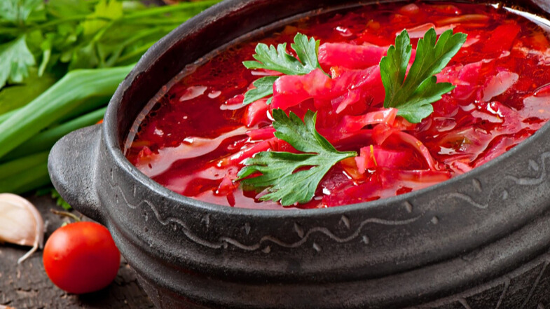

"Про Україну: що потрібно знати про Україну"
У самому серці Європи знаходиться прекрасна країна Україна. Вона з'єднує
Схід і Захід, як міст, і відіграє
важливу роль
у житті обох. Україна має глибоке історичне багатогранне минуле, багату
культуру та традиції.
Україна - це країна з чудовою природою і рідкісним колоритом традицій,
країна лікувального м'якого
мікроклімату,
самобутнього народного мистецтва і глибокої слов'янської культури.
Багата історико-культурна спадщина, озера,
річки, ліси з лісовими ягодами
та грибами, лікувальні торф'яні
грязі,
мінеральні води, риболовля... все це створює необхідні передумови для
організації та функціонування
культурно-пізнавального, оздоровчого, спортивного, сільського та інших
видів туризму!
Україна є досить популярним туристичним напрямком як серед місцевих
жителів, так і серед жителів сусідніх
країн. Пляжний
та оздоровчий відпочинок на узбережжі Чорного та Азовського морів,
екологічний та гірськолижний відпочинок в
Карпатах,
багата історична спадщина роблять подорожі до України незабутніми та
дивовижними. Завдяки численним
мінеральним джерелам
можливі оздоровчі тури до бальнеологічних курортів Моршина, Трускавець та
Свалява. Останнім часом, завдяки
активному
розвитку туристичної сфери - оновленню готельної бази, будівництву нових
готелів та благоустрою курортних
зон, потік
гостей в Україну поступово збільшується, роблячи подорожі нашою країною все
більш комфортними та
привабливими.
Клімат
Віддаленість України від океанів, континентальність Євразії та переважно
рівнинний рельєф визначають клімат
країни як
помірно-континентальний, що поступово змінюється із заходу на схід. Зі
збільшенням континентальності літо
стає
спекотнішим, зима холоднішою, а кількість опадів меншою. Такі комфортні
кліматичні умови дають людям
можливість
насолоджуватися пляжним відпочинком на Чорному морі влітку і кататися на
лижах на гірськолижних курортах
засніжених
Карпат взимку.
Найнижчі середні температури припадають на січень - лютий: -7, -8°C на
північному сході країни і в гірських
районах. У
березні спостерігається підвищення температури повітря. Найвищі
середньодобові температури зафіксовані в
липні: +20,
+25°С, а середньомісячні - +17, +19°С на півночі та північному заході,
+22,
+30°С на півдні України.
Розподіл опадів на
території України має тенденцію до зменшення з півночі та північного
заходу
на південь та південний схід.
Населення
Станом на лютий 2022 року, чисельність населення України становила
41130432 особи.
Державна служба
статистики України
- *без урахування окупованих територій (Криму, Севастополя, частини
Донбасу)
- *відомості за 2025 Держстатом не опубліковано
Важливо, що з 2014 року Державна служба статистики України не враховує
дані тимчасово окупованої території
Автономної Республіки Крим і міста Севастополя через Російсько-українську
війну (з 2014) з посиленням
російської
агресії (2022), що триває.
Розрахунки чисельності населення здійснює на основі наявних
адміністративних даних щодо державної
реєстрації народження і смерті та зміни реєстрації місця проживання.
Чисельність населення України різко
зменшується з 1994 року.
Релігія
Конфесійний ландшафт України
- Православ’я
- Українська православна церква — Київський патріархат (УПЦ-КП,
конституйована 1992)
- Українська православна церква (УПЦ) в юрисдикції Московського
патріархату
- Українська автокефальна православна церква (УАПЦ, конституйована
1921, з 1930 — у діаспорі,
відроджена в 1990)
- Католицизм
- Греко-католицька церква (УГКЦ)
- Римо-католицька церква
- Протестантизм
- Іслам
- Юдаїзм
- Буддизм
- Етноконфесійні релігійні організації
- Нові релігійні рухи
Згідно зі статистичними даними
Міністерства
культури
та інформаційної політики України, діють 36 796 релігійних
організацій (зокрема 1728 громад без державної реєстрації), 97 % яких
презентують різні християнські
конфесії: 53,7 % — православні, майже 29 % — протестантські, 14,3 % —
католицькі. (Примітка. Державна
статистика з 2014
наводиться без
урахування показників мережі релігійних організацій АР Крим, а також частини
Донецької та Луганської
областей після
тимчасової окупації цих територій росією).
Часовий пояс
Час в Україні визначається як UTC+02:00, а влітку як
UTC+03:00. Місцевий
час називається київським і є
частиною
східноєвропейського часу. Перехід на літній час відбувається в останній
тиждень березня о 03:00, коли час
переводиться
на годину вперед, і в останній тиждень жовтня о 04:00, коли час переводиться
на годину назад; таким чином,
годинник в
Україні завжди на 1 годину випереджає годинник у Центральній Європі. Майже
95% території України знаходиться
у
східноєвропейському часовому поясі, за винятком її західної та східної
околиць. Невелика частина
Закарпатської області
розташована в центральноєвропейському часовому поясі, тоді як Луганська
область, більша частина Донецької
області та
частина Харківської області географічно розташовані в далекосхідному
часовому поясі. Проте вся країна
офіційно
дотримується східноєвропейського часу.
Щорічно в Україні вводиться літній час: в ніч на останню неділю березня
годинникову стрілку переводять на
одну годину
вперед. Це дає можливість повніше використовувати світлу частину доби та
економити електроенергію. У ніч на
останню
неділю жовтня стрілки годинника повертають на годину назад, відновлюючи
часовий пояс.
Транспорт
В Україні розвинені майже всі види сучасного транспорту: залізничний,
автомобільний, морський, річковий,
повітряний.
-
Залізничний
Загальна довжина залізничних колій країни, станом на 2014 рік, становила
21 733 км (13-те місце у
світі та 3-тє в
Європі), з яких 21 684 км широкої 1524-мм колії (9 250 км
електрифіковано), 49 км стандартної
1435-мм колії (49 км
електрифіковано). На залізничному транспорті України впроваджується рух
пасажирських поїздів зі
швидкістю до 160
км/год, однак при цьому необхідно вирішити проблему розподілу мережі на
лінії з переважно вантажним
і переважно
пасажирським рухом та підвищити частоту руху пасажирських поїздів.
Водночас пропускну спроможність
залізниць на
кримському напрямку вже 2010 року було вичерпано.
-
Автомобільний
Загальна довжина автошляхів в Україні, станом на 2014 рік, дорівнює 169
694 км, з яких 166 095 км із твердим покриттям (17 км швидкісних
автомагістралей) і 3 599 км без нього 2012 (29-те місце у світі).
Мережа
основних маршрутів поширена по всій країні і з'єднує всі великі міста
України, а також надає транскордонні маршрути з сусідніми країнами. За
стан цих доріг відповідає Укравтодор. Крім того є 250 тис. км вулиць міст,
за стан яких відповідають місцеві органи влади.
-
Водний
Водний транспорт України — поділяється на дві підгалузі: морський та
річковий транспорт.
-
Морський
Управління адміністраціями 13 морських портів здійснює Адміністрація
морських портів України.
- Білгород-Дністровський морський порт
- Бердянський морський порт
- Ізмаїльський морський порт
- Маріупольський морський порт
- Миколаївський морський порт
- Одеський морський порт
- Спеціалізований морський порт «Ольвія»
- Морський порт «Південний»
- Ренійський морський порт
- Скадовський морський порт
- Морський порт «Усть-Дунайськ»
- Херсонський морський порт
- Морський порт «Чорноморськ»
Ще 5 морських портів - Севастополь, Ялта,
Керч, Феодосія та Євпаторія
в АР Крим закриті для
судноплавства до відновлення
конституційного ладу.
-
Річковий
Головна водна транспортна артерія країни — річка Дніпро, зарегульована
системою водосховищ
(Київське, Канівське,
Кременчуцьке, Кам'янське, Дніпровське і Каховське). Також судноплавні
Дунай, Дністер, Десна,
Стир, Горинь, Південний
Буг, Сіверський Донець на окремих ділянках. Основною річковою
магістраллю міждержавних
перевезень є Дунай. На ньому
діють порти Вилкове, Кілія, Ізмаїл та Рені.
-
Повітряний
Найбільші міста України мають по два аеропорти: в Києві — це «Бориспіль»
і «Київ (Жуляни)», в Сімферополі
«Сімферопольський» і «Заводський» —
. Найбільший аеропорт країни знаходиться
у Борисполі під Києвом. До
числа найбільших
також відноситься міжнародний аеропорт «Львів» імені Данила
Галицького.
Україна є членом Міжнародної
організації цивільної авіації (ICAO). Згідно зі статтею 20 Чиказької
конвенції про міжнародну цивільну авіацію 1944 року, Міжнародна
організація цивільної
авіації для повітряних суден
країни, станом на
2016 рік, закріпила реєстраційний префікс — UR, заснований на
радіопозивних, виділених Міжнародним
союзом електрозв'язку
(ITU). Аеропорти України мають літерний код ІКАО, що починається з —
UK.
Кухня
Українські страви відомі своїм різноманіттям і
високими смаковими
якостями.
Українська кухня
нараховує сотні рецептів: борщі й пампушки, паляниці й галушки, грибна
юшка,
грибний соус,
бануш,
вареники й ковбаси, печені та напої з фруктів і меду, відомі далеко за
межами України. Кулінарний туризм
посідає
перше місце серед намірів, заради яких Україну відвідують іноземні туристи
Багато особливостей української кухні обумовлені
способом життя
українського народу, переважна більшість
якого заробляла
на прожиток важкою хліборобською працею. Щоби виконувати таку виснажливу
роботу, людям була потрібна
ситна,
калорійна їжа.
Тому для української кухні властиві страви, що багаті і на білки, і на
жири,
і на вуглеводи.
Кожному з етнографічних регіонів України властиві
свої відмінності кухні,
зумовлені історичними
особливостями
та звичаями, а деякі страви української кухні, наприклад борщі й вареники,
увійшли до меню міжнародної
кухні.
Борщ, вареники , куліш — не
тільки смачні та поживні
страви, а й яскраві
кулінарні бренди України, які
мають
власну глибоку і захопливу історію. Деякі українські страви мають
багатовікове минуле, як-от,
український
борщ,
який 2022 року увійшов до Репрезентативного списку нематеріальної
культурної
спадщини людства ЮНЕСКО.
Україна — це велична і багата країна, розташована в самому серці
Європи, з унікальною
історією, культурою та
природною красою. Її мальовничі пейзажі, від Карпатських гір до Чорного
моря,
захоплюють своєю
різноманітністю, а
народні традиції
та самобутня культура вражають глибиною. Багатство української землі, її
культурна спадщина та
гостинність
людей роблять
країну справжнім скарбом Європи.
Попри всі виклики, Україна залишається сильною та незалежною державою,
яка продовжує боротися за свою
свободу та
територіальну цілісність. Росія, яка протягом століть намагалася поневолити
український народ, є
окупантом, що грубо
порушує міжнародне право та намагається знищити українську ідентичність.
Але українці — волелюбний
народ, який ніколи не
скориться загарбникам. Україна вистояла й продовжує впевнено рухатися
вперед, зміцнюючи свою
незалежність і будуючи
майбутнє, сповнене світла та надії.
Галерея
- Клімат
- Кухня
- Транспорт